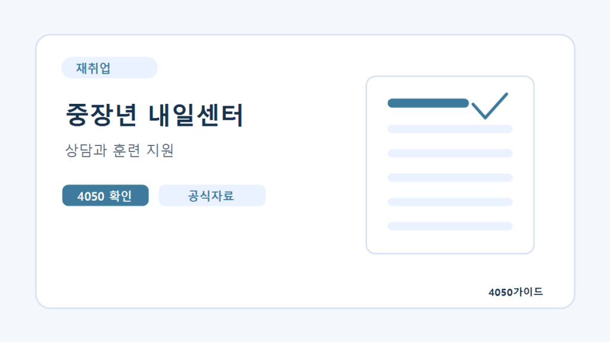

확인 필요 재취업실업급여 신청방법과 이직확인서 확인 순서
실업급여는 퇴직했다고 자동 지급되는 급여가 아닙니다. 고용보험 이력과 퇴직 사유를 확인한 뒤 구직등록, 수급자격 신청, 지정된 실업인정 절차를 진행해야 합니다.
퇴직 직후에는 건강보험 전환, 마지막 급여, 퇴직금 등 처리할 일이 많습니다. 실업급여도 늦추지 말고 확인하세요. 받을 수 있는 일수가 남아 있어도 법정 수급기간을 지나면 지급받기 어려워질 수 있습니다. 아래 내용은 일반적인 상용근로자의 구직급여 확인 순서이며 일용근로자·예술인·노무제공자·자영업자는 기준이 다릅니다.
실업급여 신청 전 기본 조건
| 항목 | 확인할 기준 | 주의할 점 |
|---|---|---|
| 고용보험 이력 | 원칙적으로 이직일 이전 18개월 중 피보험단위기간 합계 180일 이상 | 달력상 재직 6개월과 같지 않음 |
| 퇴직 사유 | 비자발적 이직 등 수급자격이 인정되는 사유 | 자발적 퇴사도 정당한 사유 여부를 개별 심사 |
| 현재 상태 | 일할 의사와 능력이 있지만 취업하지 못한 상태 | 사업·아르바이트 등 활동을 사실대로 신고 |
| 재취업 노력 | 지정된 실업인정 기간에 요구되는 활동 이행 | 활동 횟수와 인정 방식은 본인 유형에 따라 확인 |
피보험단위기간은 보수 지급의 기초가 된 날을 계산한 기간입니다. 무급 휴일이나 무급 휴직 등이 있으면 단순 재직일수와 차이가 납니다. 이전 직장 이력을 합산할 수 있는지도 확인하되 이미 구직급여 계산에 사용한 기간을 다시 모두 넣어 계산하면 안 됩니다.
이직확인서와 자격상실 처리를 먼저 확인하세요
이직확인서는 퇴직 사유, 피보험단위기간, 임금 등을 확인하는 자료입니다. 고용보험 자격상실 신고와는 별개이므로 한쪽 처리가 끝났다고 둘 다 완료됐다고 생각하지 마세요. 고용24에서 이직확인서 처리 여부를 확인하고, 제출되지 않았다면 전 직장에 발급·제출을 요청합니다.
퇴직 사유가 실제와 다르게 기재됐다면 회사에 정정을 요청하고 고용센터에도 사실관계를 설명해야 합니다. 근로계약서, 급여명세서, 계약 종료 안내, 권고사직 관련 자료처럼 확인 가능한 증빙을 보관하세요. 수당을 받기 위해 퇴직 사유를 허위로 맞추는 방식은 피해야 합니다.
고용24에서 시작하는 신청 순서
- 고용보험 자격상실과 이직확인서 처리 상태를 확인합니다.
- 고용24에 로그인해 구직등록을 합니다.
- 수급자격 신청자 교육 안내를 확인하고 해당 교육을 이수합니다.
- 수급자격 신청 절차와 관할 고용센터 방문 필요 여부를 확인합니다.
- 자격 인정 후 지정된 실업인정일과 재취업활동 기준을 기록합니다.
- 활동 증빙과 취업·소득 발생 사실을 정해진 방법으로 제출합니다.
온라인 교육을 들었다고 수급자격 신청까지 자동 완료된 것은 아닙니다. 고용24 화면의 신청 상태와 고용센터 안내를 확인하세요. 일반적인 안내 글에 나온 횟수보다 본인에게 통지된 실업인정 일정과 요구사항이 우선합니다.
퇴직 후 12개월을 넘기지 않도록 주의하세요
구직급여는 원칙적으로 이직일 다음 날부터 12개월 안에 본인의 소정급여일수 범위에서 지급됩니다. 신청이 늦으면 인정받은 지급일수를 모두 사용하지 못할 수 있습니다. 질병·부상 등으로 구직활동이 어려운 경우에는 수급기간 연장 등 적용 가능한 절차를 고용센터에 별도로 문의하세요.
예를 들어 몇 달 쉬고 훈련을 시작할 계획이라도 수급자격 확인을 먼저 하는 편이 좋습니다. 반대로 즉시 일할 수 없는 상황을 숨기고 구직활동이 가능한 것처럼 신청해서는 안 됩니다. 현재 상태에 맞는 절차를 상담에서 정해야 합니다.
자발적 퇴사와 구직활동에서 자주 생기는 오해
자발적으로 퇴사했다는 이유만으로 모든 사례가 동일하게 결정되지는 않습니다. 임금체불, 질병, 통근 문제 등은 정당한 이직 사유의 세부 조건과 증빙을 확인해야 합니다. 본인의 판단이나 주변 사례만으로 수급 가능성을 확정하지 마세요.
훈련 수강이나 취업특강이 어떤 회차의 재취업활동으로 인정되는지도 개인 유형과 안내 기준에 따라 확인합니다. 하루에 여러 활동을 했다고 모두 별도 횟수로 인정되는 것은 아닙니다. 면접 연락, 지원 내역, 교육 수료 기록을 실제 활동 날짜와 함께 정리해두세요.
공식 자료와 확인일
2026년 10월 4일 확인한 공식 안내를 기준으로 정리했습니다. 신청 결과는 담당 기관의 개별 심사로 결정됩니다.
자주 묻는 질문
6개월 근무했으면 180일 조건을 충족하나요?
반드시 그렇지는 않습니다. 피보험단위기간은 보수 지급의 기초가 된 날로 계산하므로 달력상의 재직기간과 다를 수 있습니다. 이직확인서와 고용보험 이력으로 확인하세요.
이직확인서가 처리될 때까지 아무것도 못 하나요?
처리를 요청하면서 구직등록과 교육 안내를 먼저 확인할 수 있습니다. 실제 수급자격 결정에 필요한 자료가 빠져 있는지는 관할 고용센터에 문의하세요.
퇴직하고 1년 안에 신청만 하면 전액 받나요?
아닙니다. 원칙적인 12개월 수급기간 안에 지급이 이루어져야 하므로 신청이 늦으면 남은 일수를 다 사용하지 못할 수 있습니다.
하루 아르바이트도 신고해야 하나요?
근로와 소득 발생 사실은 실업인정 과정에서 사실대로 신고해야 합니다. 단기 근로라고 임의로 누락하지 말고 신고 방법과 급여 조정 여부를 확인하세요.